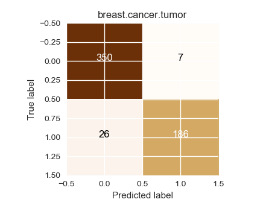

Input a text to receive response from Alfarvis
Enter Bye to close the program
Alfa is data exploration and analysis software that uses natural language
To begin data exploration, you should first load a dataset using the "load command". For example "load tour de france dataset" to load a cycling dataset
To get a list of datasets that can be loaded, call "list files"
Once you have loaded a dataset, you can perform different sets of commands : visualization, statistics, machine learning
You can list commands using "list commands" or "list visualization/statistics... commands" for specific command list
You can also get individual help for each of the commands by calling "help [command name]"
Apart from the above commands, there are also data handling commands that can set row labels, set reference for setting legends etc
You can get a list of data handling commands by calling "list data handling commands"
______________________________________________________
Note: When you load the classifiers, you will have an option to modify the algorithm parameters using a popup that opens up in the right-most column
User: load breast cancer dataset
Alfa:
Running command in background!
Loaded breast cancer tumor
Showing Statistics for breast cancer tumor
Loaded file: breast_tumor_data.csv
______________________________________________________
User: load svm
Alfa:
Running command in background!
Loaded file: SVM.csv
Saving result to svm.support.vector.machine
______________________________________________________
User: load random forest
Alfa:
Running command in background!
Loaded file: RF.csv
Saving result to rf.random.forest
______________________________________________________
User: load decision tree
Alfa:
Running command in background!
Loaded file: DT.csv
Saving result to dt.decision.tree
______________________________________________________
User: set reference to diagnosis
Alfa:
Setting reference to diagnosis
______________________________________________________
User: train rf on breast cancer dataset
Alfa:
Training the classifier
|
Features |
|
area |
|
compactness |
|
concave.points |
|
concavity |
|
fractal.dimension |
|
id |
|
perimeter |
|
radius |
|
smoothness |
|
symmetry |
|
texture |
The classifier rf.random.forest has been trained
Accuracy on training set : 100.000%
Saving result to rf.random.forest.breast.cancer.tumor
______________________________________________________
User: test rf on breast cancer dataset
Alfa:
Running the trained classifier...
Accuracy : 100.000%
Confusion matrix, without normalization
[[357 0]
[ 0 212]]
______________________________________________________
User: leave one out cross validation using svm on breast cancer dataset
Alfa:
Running command in background!
Using leave one out cross validation
Confusion matrix, without normalization
[[350 7]
[ 26 186]]

Saving result to figure.2.cval.cancer.breast.tumor
______________________________________________________
User: leave one out cross validation using rf on breast cancer dataset
Alfa:
Running command in background!
Using leave one out cross validation
Confusion matrix, without normalization
[[343 14]
[ 18 194]]
Saving result to figure.3.cval.cancer.breast.tumor
______________________________________________________
User: find top 5 predictors of breast cancer dataset
Alfa:
|
feature importance |
top features |
|
0.28 |
concave.points |
|
0.17 |
area |
|
0.14 |
perimeter |
|
0.13 |
concavity |
|
0.10 |
radius |
Saving result to top.predictors.breast.cancer.tumor
______________________________________________________
User: leave one out cross validation using rf using top.predictors.breast.cancer.tumor
Alfa:
Running command in background!
Using leave one out cross validation
Confusion matrix, without normalization
[[337 20]
[ 27 185]]
Saving result to figure.4.cval.breast.cancer.tumor.top.predictors
______________________________________________________
User: which is the best classifier between svm rf and dt on breast cancer dataset
Alfa:
Training classifier using the following features:
Index(['area', 'compactness', 'concave.points', 'concavity',
'fractal.dimension', 'id', 'perimeter', 'radius', 'smoothness',
'symmetry', 'texture'],
dtype='object')
Testing the following classifiers:
svm.support.vector.machine
rf.random.forest
dt.decision.tree
Finding the best classifier using k fold cross validation...
Plotting the confusion matrices...
Confusion matrix, without normalization
[[350 7]
[ 26 186]]
Confusion matrix, without normalization
[[343 14]
[ 16 196]]
Confusion matrix, without normalization
[[331 26]
[ 27 185]]
Best classifier is rf.random.forest with an accuracy of - 94.73%
______________________________________________________
User: save notebook
Alfa: